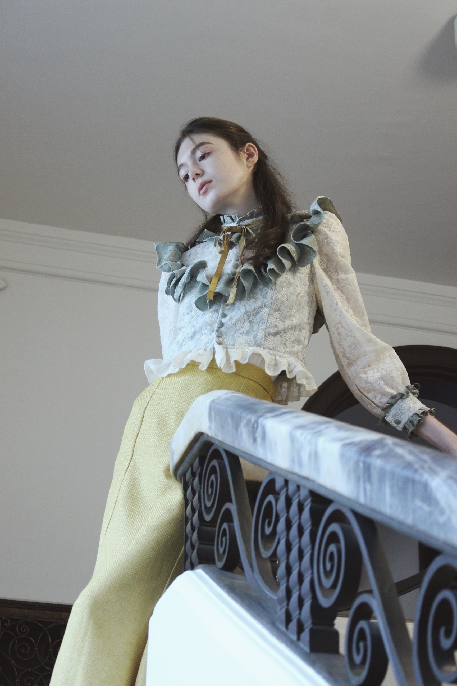
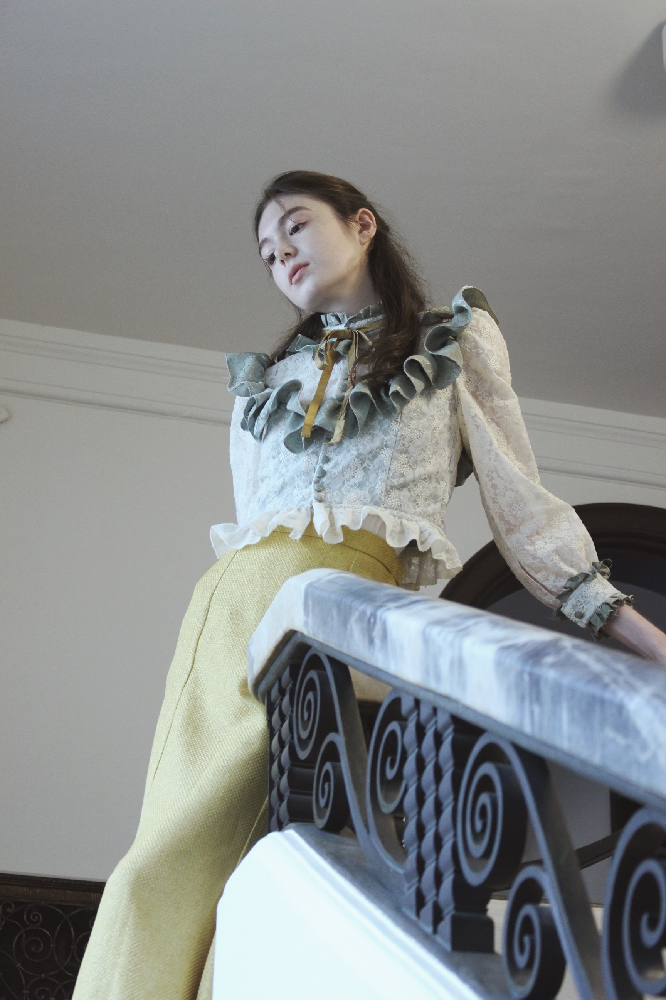
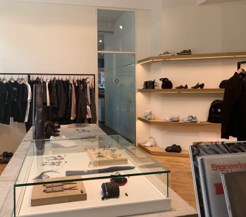
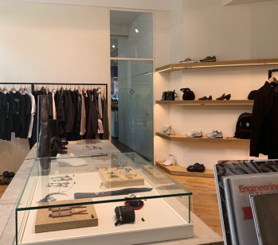
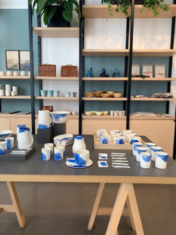
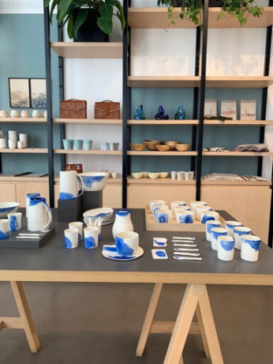
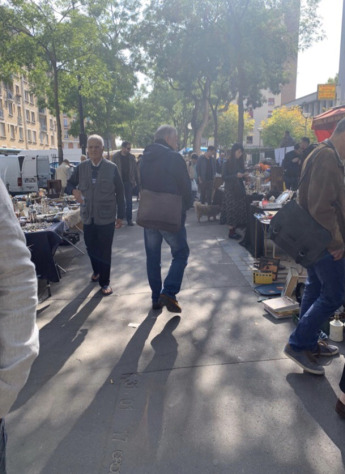
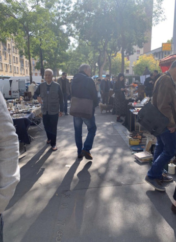

 



 

 



DIRECTOR
舞台装置・照明・音響などの演出を考え、ファッションショーの空間作り全般を担います。また、団体の世界観を伝えるための動画も制作します。
PRESS
当団体の表現を自己完結させるのではなく、協賛活動やSNS・HPの運営、フライヤー作成を通して社会へ発信する役割を担っています。
DESIGNER
「服」という媒体を通して団体の考えを表現します。ESMOD JAPON東京校にて服飾表現を基礎から学び、衣装を制作します。
MODEL MANAGER
ショーに出演していただくモデルのハンティング、衣装フィッテイングの日程調整、ウォーキングレッスンの引率など、当団体とモデルをつなぐ役職です。